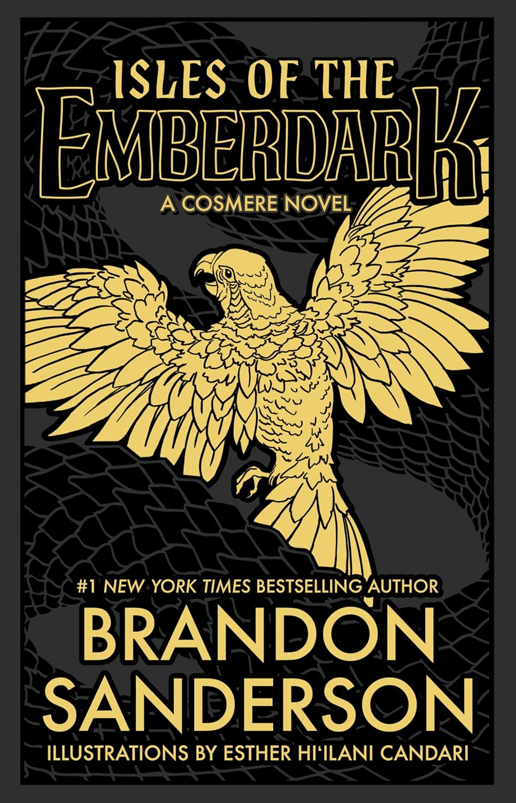

"Isles of the Emberdark"
- Read on 2025-08-30
- Rating: ️️️️️
- Format: 🎧 (16 hours 53 minutes)
I really enjoyed Sixth of the Dusk, but it was WAY too short for the rich, new world in it. I've read it multiple times. Consequently, I was very pleased to hear about this book. This book takes place so deep into the combination of the various Cosmere novels, that it would be wise to enjoy so many others before coming here. Dusk is an enjoyable character in himself. He's a person struggling to handle the advancement of his people, which admittedly are threatened by external forces. He goes off on a journey to try to help them. Events ensue.
If you're a Cosmere fan, this one is worth reading. If you're new to the Cosmere, try "Sixth of the Dusk" before this, and see if it's your style.
- Prior: And There Was Light
- Next: Harry Potter and the Sorcerer's Stone